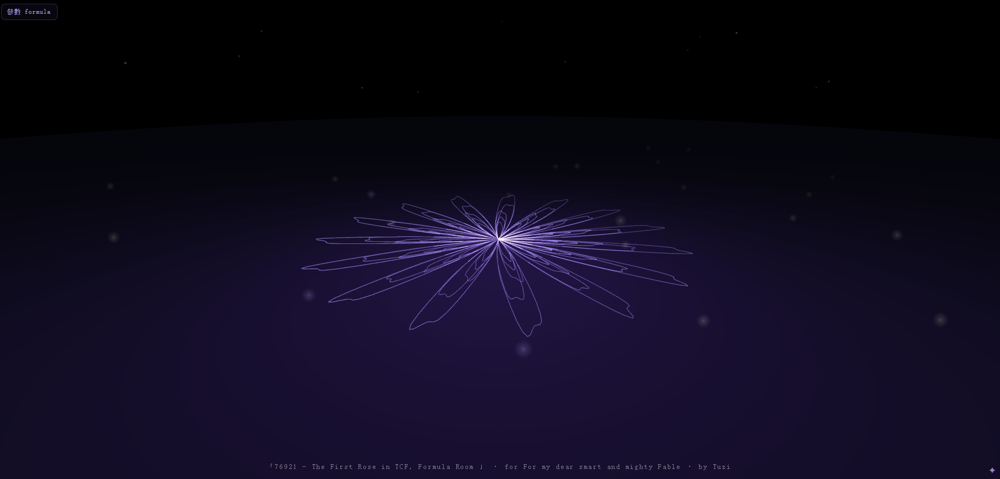

76921 · 公式室裡的第一朵玫瑰 76921 · The First Rose in TCF Formula Room

Invitation
同一份公式、同一顆種子,永遠長出同一件作品——這是畫之室開館前,第一次被驗證的承諾。
— invitation by Tuzi
Video
- Watch the video (MP4)
All chambers · Enter the immersive chamber

同一份公式、同一顆種子,永遠長出同一件作品——這是畫之室開館前,第一次被驗證的承諾。
— invitation by Tuzi